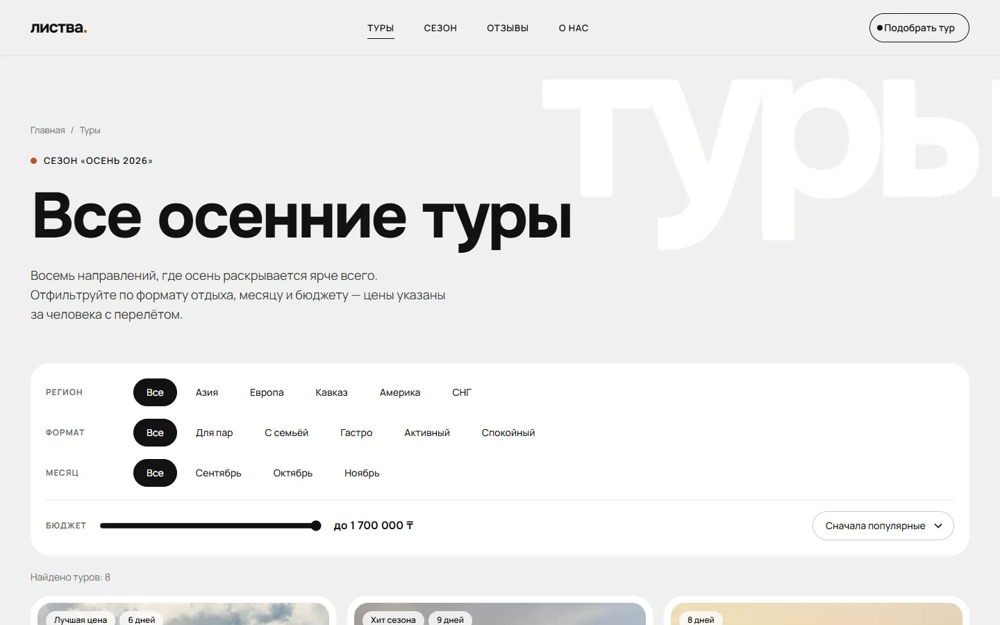
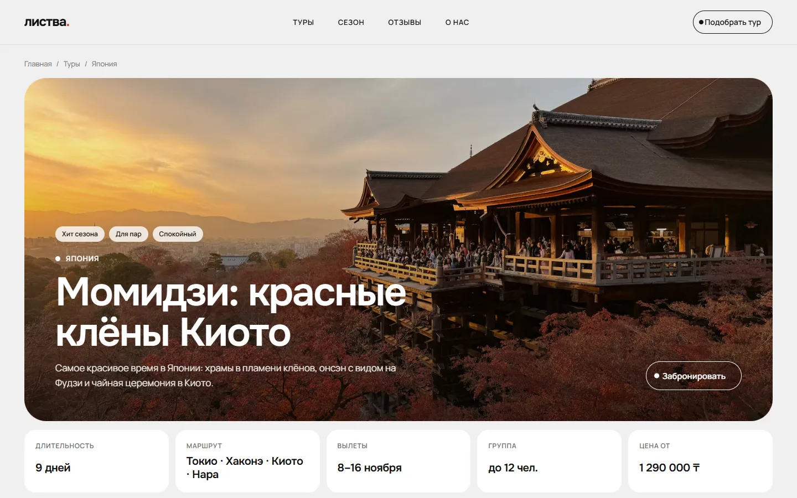
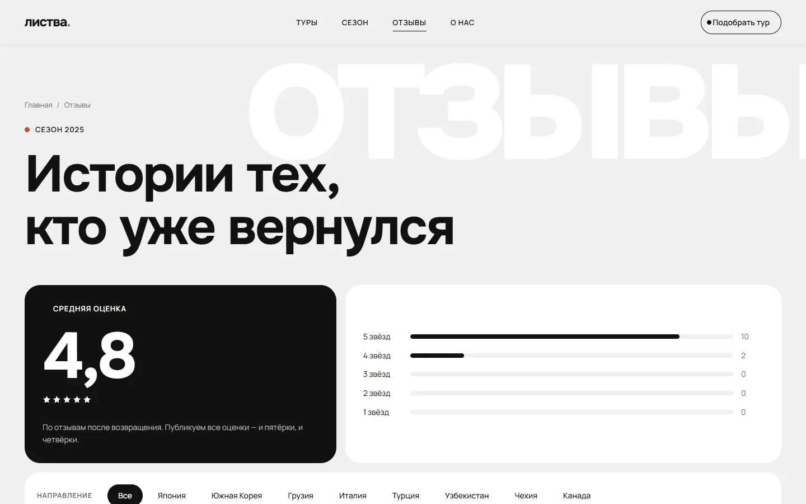

Каталог, в котором легко выбрать
Туры фильтруются по региону, формату отдыха и месяцу. Ползунок бюджета сразу убирает то, что не по карману, — посетитель не тратит время на лишние карточки.

Концепт: турагентство осенних туров
Агентство возит из Алматы и Астаны смотреть осень: клёны Киото, виноград Кахетии, шары Каппадокии. Сайт устроен так, чтобы человек выбрал тур, увидел цену и оставил заявку без единого звонка.
Туры фильтруются по региону, формату отдыха и месяцу. Ползунок бюджета сразу убирает то, что не по карману, — посетитель не тратит время на лишние карточки.

Длительность, маршрут, даты вылета, размер группы и цена видны сразу под фотографией. Ниже — программа по дням, отели и пакеты с расчётом итоговой суммы.

Средняя оценка, распределение по звёздам и фильтры. Видно не только похвалу, но и общую картину.
